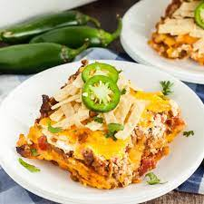

Lasagna

Description
Delicious Mexican Casseroles
Ingredients
- 1 pound ground beef
- 1 (15 ounce) can sweet corn, drained
- 1 cup mild, chunky salsa
- ¼ cup sliced black olives
- 3 ½ cups cooked egg noodles
- 1 (15.25 ounce) can kidney beans, drained and rinsed
- ¼ cup taco sauce
- 1 (1.25 ounce) package taco seasoning mix
- ½ cup tomato sauce
Directions
- Preheat oven to 325 degrees F (165 degrees C).
- In a skillet over medium heat, cook the ground beef until evenly brown; drain.
- In a 9x13 inch baking dish combine the beef, corn, salsa, olives, cooked noodles, beans, taco sauce, seasoning mix and tomato sauce.
- Bake in the preheated oven for 1/2 hour, or until cooked through.